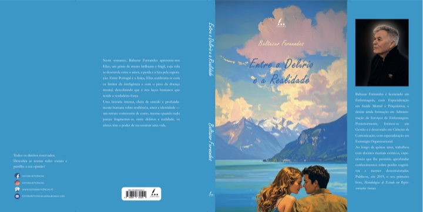

Entre o Delírio e a Realidade
Neste romance de Baltazar Fernandes, acompanhamos Elias, um génio tão brilhante quanto vulnerável, que enfrenta o peso da doença mental enquanto procura sentido entre o amor e a perda. Entre diferentes cenários e desafios internos, a história revela como os laços humanos podem ser a chave para a superação e reconstrução de uma vida.
- História marcada por amor, perda e superação
- Exploração sensível dos limites da mente humana
- Portugal e a Suíça, IST, vínculos e identidade
Comprar na Editora Reticências
Sinopse completa
Elias é o protagonista desta narrativa intensa e profundamente humana, marcada pela luta entre o delírio e a realidade. Nascido numa aldeia do Minho, a sua infância é marcada pela ausência do pai e pela frieza da mãe, encontrando consolo apenas nos braços da avó. O seminário, para onde é empurrado, deixa-lhe cicatrizes profundas, levando-o a fugir para Lisboa, onde começa uma nova vida.
Em Lisboa, Elias é acolhido por uma família que lhe oferece afeto e oportunidades. É aí que conhece Clara, o grande amor da sua vida, com quem partilha uma relação feita de ternura, cumplicidade e superação. O percurso académico leva-o ao Instituto Superior Técnico e, mais tarde, à Suíça, onde se destaca como estudante brilhante e enfrenta novos desafios, incluindo uma relação complexa com Ji-Hye, marcada por diferenças culturais e afetivas.
O romance aborda de forma sensível a experiência da esquizofrenia, mostrando não só o sofrimento e o estigma, mas também a possibilidade de reconstrução através do amor, da amizade e do acompanhamento clínico. Elias vive momentos de crise profunda, incluindo um surto psicótico e internamento, mas é através do apoio de Clara e do tratamento adequado que encontra forças para se reerguer.
Ao longo da narrativa, acompanhamos a evolução de Elias: da infância difícil à maturidade, passando pela paternidade, pelo sucesso académico e profissional, pelas perdas e reencontros, e pela busca constante de sentido e pertença. O livro celebra a força dos afetos, a resiliência perante a adversidade e a capacidade de transformar a dor em arte e conhecimento.
No final, Entre o Delírio e a Realidade deixa uma mensagem de esperança: mesmo quando a mente tropeça, é o amor — nas suas múltiplas formas — que cose as feridas, devolve dignidade e acende a esperança.